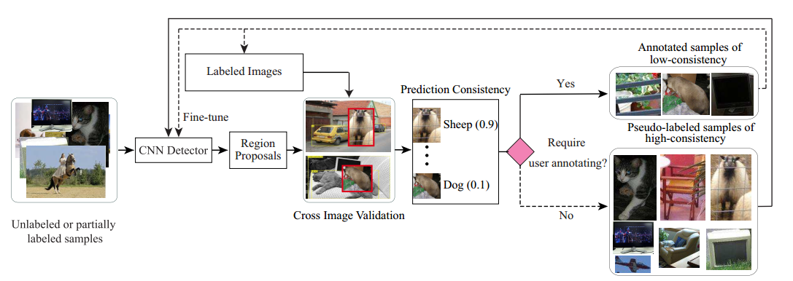

-

Cost-Effective Object Detection: Active Sample Mining with Switchable Selection Criteria.
Keze Wang, Liang Lin, Xiaopeng Yan, ZiLiang Chen, Dongyu Zhang, and Lei Zhang.
IEEE Transactions on Neural Networks and Learning Systems (TNNLS), 2018.
[Project] [PDF] [Code] [pytorch-version]
-
Meta R-CNN : Towards General Solver for Instance-level Low-shot Learning.
Xiaopeng Yan*, Ziliang Chen*, Anni Xu, Xiaoxi Wang, Xiaodan Liang, Xiaopeng Yan, Xiaodan Liang, and Liang Lin.
IEEE International Conference on Computer Vision (ICCV), 2019.
-
Multivariate-Information Adversarial Ensemble for Scalable Joint Distribution Matching.
Ziliang Chen, Zhanfu Yang, Xiaoxi Wang, Xiaodan Liang, Xiaopeng Yan, Guanbin Li, and Liang Lin.
IEEE International Conference on Machine Learning (ICML Oral Presentation), 2019.
-

Towards Human-Machine Cooperation: Self-supervised Sample Mining for Object Detection.
Keze Wang, Xiaopeng Yan, Donyu Zhang, Lei Zhang, and Liang Lin.
IEEE Conference on Computer Vision and Pattern Recognition (CVPR), 2018.
[Project] [PDF] [Code] [pytorch-version]
Journal papers
Conference papers